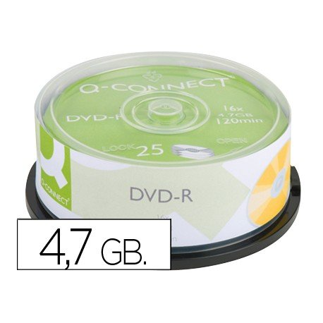

Medios Ópticos
Los discos ópticos son un producto de almacenamiento de datos que guardan el contenido en formato digital.
CD
El disco compacto es un disco óptico utilizado para almacenar datos en formato digital, consistentes en cualquier tipo de información. Los CD's tienen una capcidad de 700 MB.
Tipos de CD
CD-R Colores
Presentan una variedad de cinco colores de discos con una impresión de disco moderna.
Digital Vinyl
Con una superficie de disco inspirada por el disco de 45 rpm, los productos Digital Vinyl CD-R brindan rendimiento digital eu nu diseño retro.
LightScribe y LightScribe de colores
Permite grabar etiquetas de disco de calidad de serigrafía, sin necesiddad de una impresora.
DVD
Las siglas DVD corresponde a Digital Versatile Disc (disco versátil digital) de modo que coinciden los acrónimos en español e inglés.
En 1995 es la creación de el consorcio DVD y en 1997 cambia el consorcio a foro DVD.
Características DVD-R y DVD+R
Los DVD-R son poco más lentos en el proceso de grabación que los DVD+R y no permite la grabación en bloques.
El proceso normal de grabación consta de formateo, grabación y cierre del DVD. El formateo se produce antes de ser utilizados. En los DVD+R este formato se produce de forma simultánea a la grabación.
El formato DVD-R no permite parar la grabación y reiniciarla en el último punto. DVD+R no tiene ningún problma en este punto.
Al igual en un DVD+RW podemos parar la grabación y reiniciarla a partir de un punto determinado, cosa qe no es posible hacer con un DVD-RW.
DVD-R: Los agujeros se consideran niveles lógicos bajos(0).
DVD+R: Los agujeros se consideran niveles lógicos altos (1).
Capacidades de almacenamiento del DVD
DVD 5: Una cara, capa simple; 4.7 GB o 4.38 GiB
DVD 9: Una cara, capa doble; 8.7 GB o 7.92 GiB
DVD 10: Dos caras, capa simple en ambas caras; 9.4 GB o 8.75 GiB
DVD 14: Dos caras, capa doble en una cara, capa simple en la otra; 13.3 GB o 12.3 GiB
DVD 18: Dos caras, capa doble en ambas; 17.1 GB o 15.9 GiB

Blu-ray Disc
Graba y reproduce sus datos por medio de su famoso laser de color azul (de ahí el nombre).
El laser posee una lomgitud de onda menor que la convencional (405 nanómetros).
Una de las apliaciones más importantes que ha desarrollado el Blu-ray en la actualidad, ha sido la capacidad de reproducir contenido en 3D.
Cuenta con un sustracto que le sirve como escudo, que lo protege de las ralladuras.
Una capa puede contener hasta 25 GB y el disco de doble capa contener aproximadamente 50 GB.